ВАН ГОГ В СКУЛЬПТУРЕ. Об Исааке Иткинде
Ощущение могущества искусства и непобедимой силы художника-творца исходило от этого человека. Он преодолевал все тяготы, был счастлив и жизнелюбив.
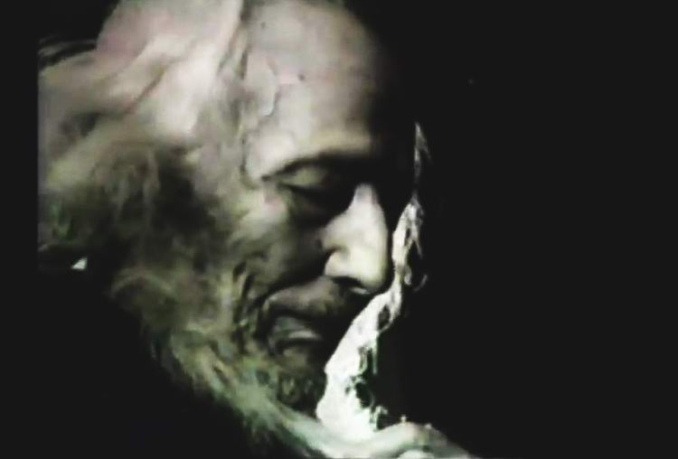
ВАН ГОГ В СКУЛЬПТУРЕ /полную версию см.здесь/ lechaim.ru
Григорий Анисимов. Об Исааке Иткинде
Скульптор Исаак Иткинд – это живое воплощение искусства, мастер, обладающий тем самым редкоземельным веществом, энергия которого в разное время клокотала в Донателло, Тициане, Гойе, Пикассо, Шагале.
В последний раз перед долгими годами забвения работы Иткинда экспонировались в 1937 году в Эрмитаже на выставке, посвященной 100-летию со дня смерти Пушкина. «Пушкин» Иткинда был признан лучшим на конкурсе.
А для Иткинда этот год стал трагедией. Он был арестован как шпион, в Крестах (в годы сталинщины политическая тюрьма в Ленинграде) ему выбили зубы на допросах, отбили слух и сослали в Казахстан. Никто ничего не знал о его судьбе – потому и стали в каталогах указывать 1937 год как год смерти скульптора. А он прожил еще тридцать два года, создал множество произведений.
Есть в этом перст Г-спода и судьбы.
В 1965 году я был в Алма-Ате, отыскал Исаака Иткинда, долго беседовал с ним. Он подробно рассказывал о своей жизни, о работах, созданных им, объяснял свои мысли. Ощущение могущества искусства и непобедимой силы художника-творца исходило от этого человека. Он преодолевал все тяготы, был счастлив и жизнелюбив.
Благородные черты гения различимы были в его облике – для этого не требовалось особого труда.
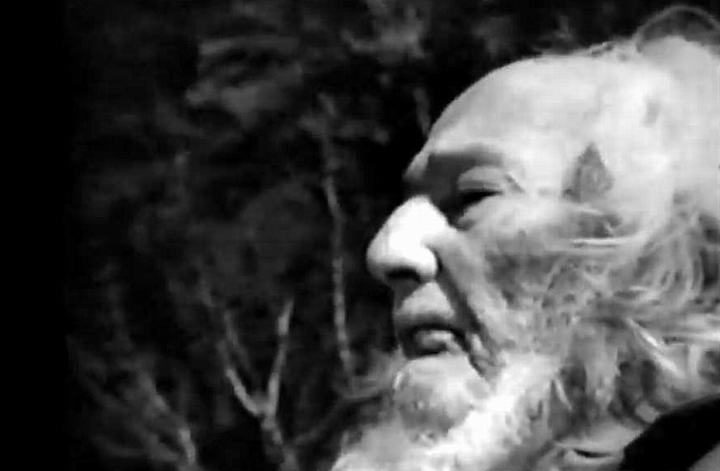
Вот он сидит передо мной в белоснежной рубашке, праведник из праведников, бывший богослов и внук знаменитого Коцкого раввина, Ицхак сын Яакова, знавший в молодости почти весь Талмуд наизусть.
– Вы знаете, мне уже скоро будет сто лет, я постоянно уменьшал себе годы, чтобы не пугать женщин своим возрастом… Скоро я переселюсь в рай, там много дерева для работы, много обнаженной натуры.
Глаза его сияют удивительным сиянием вечной мудрости Мастера.
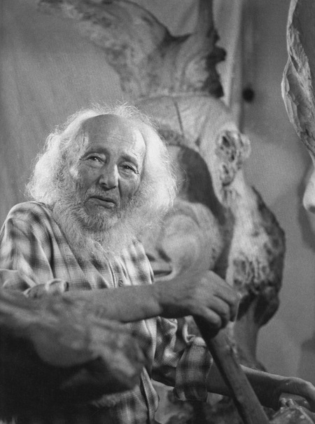
Слушая его повествования, разглядывая его работы, пораженный масштабом личности этого человека, я подумал о том, сколько же лет должно пройти, чтобы люди поняли, оценили вклад этого художника в мировое искусство, признали его гением, как Цадкина, Башевиса-Зингера или Эйнштейна.
Исаак Иткинд был не только выдающимся мастером пластики XX века, но и замечательным писателем. Его устные рассказы приводили в восторг Горького, Алексея Толстого, Маяковского и Есенина. Все они относились к Иткинду с необыкновенной сердечной теплотой. Больше всего рассказы Иткинда напоминают прозу Менделе Мойхер-Сфорима и Шолом-Алейхема.
Самобытный почерк скульптора вобрал в себя достижения мировой школы ваяния. И равно так же его устные рассказы были плоть от плоти рождены высокими традициями еврейского народного творчества в области словесного искусства. Писатели настойчиво советовали Иткинду писать, но ему вечно не хватало времени. Ведь он не знал, что проживет сто лет, и всегда очень торопился. Да если бы и знал, то не такой человек был Иткинд, чтобы отвлекаться от своей основной профессии. Но читать Иткинд любил. Можно сказать, что он был заинтересованным и страстным читателем. Он знал Пушкина отменно, читал его на русском языке и в переводах на еврейский, знал Гоголя, любил Менделе Мойхер-Сфорима. В конце концов он взялся за перо, написал много, но при его кочевой жизни мало что сохранилось.
Алексей Толстой взял у Иткинда несколько рассказов и опубликовал их в майском номере журнала «Звезда» за 1934 год.
Мудрость, гуманистическая традиция, юмор, нотки иронии пронизывают рассказы великого скульптора.
Когда Иткинд работал над образом Пушкина, он сутками не выходил из мастерской, которую получил при помощи Кирова. (Возможно, это и послужило причиной его ареста.) Иткинд забывал обо всем. Он создал около ста изображений поэта. Как глубоко он почувствовал Пушкина! Смертельно раненый поэт прощается с жизнью. Он будто смотрит в самого себя, его взгляд выражает сожаление о безвременно оборванной жизни. И его «Моцарт», и «Паганини» поражают силой художественного чутья, остротой личностного переживания художника.
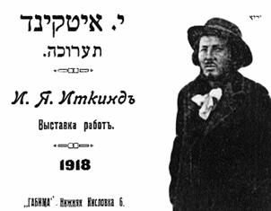
1918 год. В теаре «Габима» открылась персональная выставка И. Иткинда.На ней было представлено тридцать портретов, композиций, сюжетных сценок – большая часть из них утеряна. Выставка имела серьезный успех.
«Моцарт» у Исаака Иткинда – сама непринужденность, детская доверчивость, открытость, романтический порыв. Свобода трактовки, лаконизм, простота, воплощенный пластическими средствами одухотворенный идеал прекрасного – все это под рукой Иткинда обретает высочайший образный смысл. Поначалу кажется, что Моцарт внешне мало похож на то изображение, которое приходилось видеть, ведь были прижизненные портреты, салонные, парадные, пустые. Изображение Моцарта попадалось даже на конфетных обертках.
Иткинд обладал даром постижения человека путем тончайшей интуиции. Каждый образ человека у Иткинда уловлен сильным чувством, особым эмоциональным восприятием. Это душевные колебания такой частоты, которые улавливает только гений. Не только улавливает, но может их воплотить в материале. Иткинд был скульптор от Б-га. Он не раз говорил: «Мне кажется, что портретное сходство в скульптуре не особенно важно. Имеет решающее значение внутренний мир человека. Когда я смотрю на живую натуру или работаю по воображению, для меня важна человеческая сущность, характер человека. Именно это я хочу выразить в работе. Самое ценное, что есть в человеке – его душа. Она прекрасна. А прекрасное вечно. Вечность – это бессмертие. Еще Леонардо говорил: главная цель портрета – уловить в лице душу».
Но надо знать Иткинда: за внешностью он различает вполне определенные черты гения, будь то Моцарт, Пушкин или Паганини. В Моцарте он улавливает неслышимые звуки, энергичный душевный порыв.
Дерево под его резцом оживает, возникает атмосфера сильного музыкального переживания. Глядя на «Моцарта», которого создал Иткинд из куска дерева, начинаешь думать о том, что перед тобой самый загадочный гений во всей мировой музыке.
Рядом с «сочным», хохочущим Паганини резьбы Иткинда его «Моцарт» кажется более сдержанным в пластике, даже суховатым. Но это неверное, поверхностное впечатление. Образ Моцарта вливается в вас точно небесная музыка, исполненная большого общечеловеческого смысла. Иткинд применяет глубоко индивидуальный способ трактовки образа, свойственный только ему одному. Он создает впечатление нераздельной художественной цельности и глубины. Изящество и артистизм вместе с выразительной моделировкой формы, обостренность чувств и трепетная нежность придают портрету Моцарта странную «планетарность» и космичность. «Быль отдельного лица» носит характер всеобщности. Моцарт у Иткинда согрет идущей из его щедрого сердца добротой и любовью. Этот портрет покоится на тесном союзе сильных чувств и гениальной пластики. Он является шедевром в портретной галерее мировой классики.
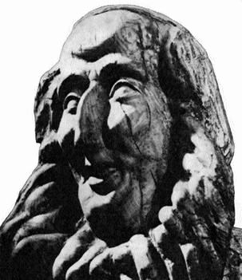
Много портретов создал Исаак Иткинд в своей жизни. Этот жанр он любил: Поль Робсон и поэтесса Берта фон Зутнер, Шекспир и Пушкин, портреты простых людей – литейщиков и монахов, сапожников и талмудистов, еврейской бедноты, юношей и девушек – из всего им созданного сохранилась одна треть. Но «Моцарт» в этом ряду – особенный. Скульптор говорит нам: «Этот гений все превращал в музыку своим претворяющим прикосновением, над его головой звучали тысячи серебряных колокольчиков».
– В моей жизни было два знаменательных случая, – рассказывал Исаак Яковлевич. – У меня купил работу Савва Морозов, один из самых богатых людей России. Я стал знаменит. Максим Горький ходил повсюду и говорил: Иткинд! Иткинд! Слава пришла ко мне. А вскоре после революции приехал брат 26-го президента Америки Теодора Рузвельта, купил у меня работы и стал звать меня поехать с ним, сулил богатство и признание. Конечно, посмотреть на мир очень интересно… Я не поехал. И не жалею об этом.
Вы знаете, кто написал обо мне первую статью? Еврейский писатель Перец Гиршбейн. Я ему очень благодарен. Его статья была помещена в газете «Северо-западный голос» в Вильно. Мне собирали деньги по дворам хасидов, чтобы я мог учиться в Москве или в Петербурге. И я поехал учиться, чтобы стать профессиональным скульптором. Фердинанд Рушиц, Сергей Михайлович Волнухин – мои учителя. Вы знаете, я очень люблю молодых девушек, ведь каждую из них можно превратить в скульптуру под названием «Весна». Смерти я не боюсь, но боюсь, что меня положат рядом с какой-нибудь старухой. А этого мне очень не хочется…
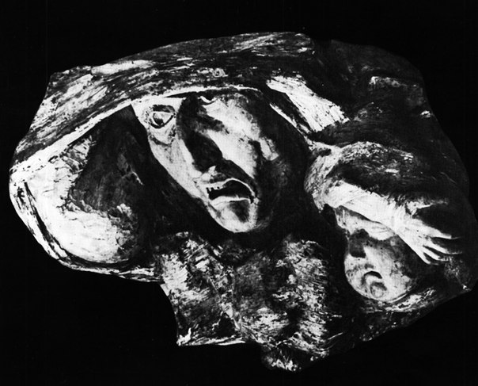
Андрей Игнатьевич Алдан-Семенов, писатель, поэт, бывший зэк сталинских лагерей написал как-то статью об Иткинде. Она была опубликована в газете «Казахстанская правда» 19 декабря 1958 года. Начиналась она словами: «жили и всегда будут жить на земле люди, создающие вокруг себя атмосферу доброжелательства, активной деятельности и сердечного внимания». Это знаменательные слова.
Исаак Иткинд относился к тому редчайшему на земле типу людей, которые сеяли добро. Ведь призвание художника в том и состоит, чтобы сеять разумное, доброе, вечное. Призывать людей к сотрудничеству, доброжелательству, к свету. Большая часть произведений Иткинда пронизана живительным светом добра. Он любил больше всего изображать людей чистых, светлых, добрых, талантливых.
У Иткинда была идея создать портрет тирана – жестокого, одинокого, полусумасшедшего старика, достигшего высшей власти. Он не доверяет никому, даже собственным детям. Во всех талантливых людях он видит соперников или врагов. Он живет унылой жизнью постоянно торопящегося человека и не знает, что торопится к смерти. Хотя, раздумывал художник, портрет тирана или палача всегда пессимистичен, а пессимизм бесплоден, особенно для художников. Надо остерегаться одних мрачных красок. К такому выводу Иткинда приводил весь опыт его долгой жизни.
У Алдан-Семенова сохранились в записных книжках высказывания Исаака Яковлевича. Вот некоторые из них. «Мои седины не позволяют мне изменять правде». «Слава – временный успех на бирже жизни». «Я хочу, чтобы каждый человек сам догадывался безо всяких подсказок по моим работам, что это “Поэт”, это “Музыкант”, это “Мыслитель”, это “Пророк”. Мастерства, глубины не хватает нашему брату».
Иткинду хватало и мастерства, и глубины мысли, и силы чувств. Не зря о нем говорили, что он разжигал вокруг себя огонь творчества, не страшась опалиться.
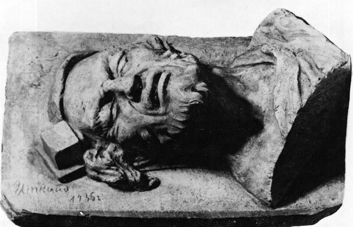
У Иткинда было убеждение, что человек должен страдать, у каждого свой рок на этой земле. Возможно, это и помогло ему перенести все несчастья, невзгоды, муки. Когда его каждый день били в тюрьме, требуя признаний о шпионаже в пользу Японии, он раздумывал о том, что страшна не одиночка, не голод, а ожидание. Человек в конце концов ко всему привыкает. Ожидание – вот что было мукой для Иткинда. Он понял, что здесь попраны все права, все человеческое. Иткинд отлеживался. Ему приносили хлеб, он собирал мякоть и лепил фигурки людей. Творчество, любимое дело спасало его. Он был Стоик, Титан. У него была молодая, звонкая, постоянная любовь к жизни. Ему было интересно жить. Да и люди, которые встречались на его пути, были необыкновенны. Взять хотя бы Маяковского. Иткинд относился к нему с отцовской нежностью. И говорил: «Маяковский был весь поэт. И голос. И рост. И даже палка – поэт».
Однажды Маяковский пригласил Иткинда на вечер футуристов. Привыкший к тишине мастерской скульптор попал в такую непривычную обстановку, что даже слегка ошалел. За столом сидели Давид Бурлюк, Каменский, Маяковский, Есенин. Все в зале, набитом битком, орут, лезут на столы. Бедлам, сумасшедший дом…
«С Есениным мы были знакомы давно, встречались в мастерской у Коненкова, пили спирт. Сережа был как земля – простой, красивый, как ветер, по возрасту мальчик, но мальчик гениальный. Я его очень любил.
Вдруг Маяковский объявил: “Здесь среди нас присутствует знаменитый скульптор Исаак Иткинд. Интересно, что он думает о футуризме?”
Меня подняли на руки и поставили на стол. Надо было что-то говорить.
– Я вам сейчас расскажу одну притчу из Талмуда…
В зале поднялся дикий хохот. Но тут зарокотал мощный бас Маяковского: “Дайте Иткинду говорить! Талмуд и футуризм – это очень интересно”.
– Однажды мудрец и мальчик пришли в огромный город и попали на базар. Это было очень давно, много веков назад. Один из торговцев на весь базар орал: “Вот самое гнилое мясо. Всего десять грошей!”
Рядом стоял другой торговец и робким голосом говорил: “Вот свежее мясо, всего два гроша.” Но никто не обращал внимания на него, а к продавцу за десять грошей ломилась толпа.
И тогда мальчик спросил у мудреца: “Скажи мне, почему гнилое мясо берут за десять, а свежее не берут за два гроша?”
Мудрец усмехнулся: “Знаешь, сынок, все просто – сейчас мода на гнилое мясо!”
Зал взорвался оглушительными аплодисментами.
– Так и вы здесь кричите все: дайте нам гнилого мяса, дайте!»
Есенин тут же влез на стол и сказал: «Я не знаю Талмуд, не знаю, есть ли там такая притча, но даже если Исаак выдумал это сейчас – все равно скажу: здорово выдумал, молодец!»
Иткинд не мечтал обессмертить себя. Он просто работал. Работал всю свою долгую жизнь. В искусстве, в его истории часто бывало, что художника забывали надолго. Потом спохватывались. Забывали Рембрандта, забывали Вермеера. Забыли Иткинда. Но все становилось на свое место. Пусть и не сразу. Время Иткинда обязательно прийдет.
Когда-то в Малаховке, в Подмосковье художники стали обучать искусству беспризорных детей. Там преподавали Марк Шагал и Исаак Иткинд. Один вел уроки живописи, другой – искусство лепки.
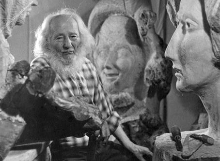
В свободное время Иткинд резал из дерева. Шагал часто заглядывал к Иткинду, восхищался его работами. Личность скульптора, бывшего талмудиста, вызывала у него непреходящий интерес. «Твоя скульптура, Исаак, взобралась на гималайскую высоту, – сказал как-то Шагал, – высоту движения духа. Она парит, она чарует. Тебе удается сплавить воедино пластическое и поэтическое. Фактура дерева у тебя звучит как музыка. Я всем говорю: Иткинд – это Ван Гог в скульптуре!»
Гению доступно многое, чего мы не узнаем никогда. Убежден, что Иткинду слышалась музыка сфер, голос природы, пение деревьев. Он видел и слышал голос вечности. И оставил людям все им услышанное в изумительной пластической форме.
Он жил в городке Сморгони Виленской губернии. Таких городков, набитых голью да нуждой, было великое множество в Российской империи. И жители Сморгони, равно как и другие подданные его царского величества, должны были трудиться в поте лица и верно служить узаконенной власти.
Сын местного учителя Исаак Иткинд, как и было положено по религиозному уставу, жил обычной жизнью аскета, спал на голых досках, переходил из семьи в семью, читал Талмуд, за что его кормили добрые люди. Понавидался он и горя и несчастий по самое горло и удивлялся Всевышнему, что он допускает на земле жестокость и несправедливость, мучения людей.
Однажды в субботу он отправился в лес на прогулку и попал на рабочую сходку. Молодые парни пели необычные песни о равенстве и братстве. Послушал Иткинд эти песни, и они сильно увлекли его. Посмотрел он повнимательнее на этих людей, на их грубые, заскорузлые руки, на их темные хмурые лица. Рабочие приняли Иткинда как своего, они его не опасались, не гнали, не отталкивали. А потому Иткинд попросил у них разрешения прийти в следующий раз, когда они соберутся. Ему охотно разрешили. И в другую субботу он снова был среди них. А вскоре бывший талмудист, не обращая никакого внимания на уговоры, мольбы и угрозы, пошел работать переплетчиком.
Жажда творчества, дремавшая в нем, проснулась, стала искать выхода в ремесле. Он перепробовал много профессий, часто менял работу. Но удовлетворения она ему не приносила.
Никогда Иткинд не чувствовал такого предельного отчаянья. Впереди его ждали тяжелые испытания, среди них годы голодного бездомного существования, но муки, которые он испытывал тогда, не шли в сравнение ни с какими другими. Пропала вера, а с нею – смысл, наполненность жизни.
В то же время он чувствовал, что есть какая-то область, будто созданная специально для него, где он мог воплотить все стремления своей души.
А где-то рядом скрывалось то, ради чего он жил на земле. Но он не знал не только где, но и что ему искать. Об этом были его тревожные ночные думы.
Вот тогда-то и попала ему в руки монография об одном из крупнейших русских скульпторов М. Антокольском. Два дня и две ночи не отрывался Иткинд от этой книжки.
См. видео "Скульптор Исаак Иткинд. Еврейская мелодия"
Господи, какую немыслимую красоту могут сотворить руки человека! Поразило Иткинда, что Антокольский родился в Вильно, совсем рядом с его Сморгонью. Он родился всего на четверть века раньше Иткинда, но сколько успел сделать! С жадной страстью разглядывал Иткинд воспроизведенные скульптуры «Портной», «Скупой», «Нестор-летописец», «Христос перед народом». В каждой работе мастера был четко выраженный характер человека. Когда Иткинд-переплетчик открыл для себя искусство, скульптуру, Антокольского уже не было в живых. Но как вовремя, как неизбежно произошло знакомство Иткинда с его работами! Антокольский дал ему тот толчок, который страстно искал не осознавший себя талант. Он научил Иткинда смотреть на мир иными глазами.
И вот с самозабвенностью, свойственной этой натуре, бывший талмудист, бывший переплетчик погружается в творчество. Воображение его подобно раскаленной лаве, она рвется наружу, и он едва успевает повелевать этим стремительным потоком, придавая ему нужную форму.
Он лепит образы сморгоньской бедноты. Без помощи и руководства, на свой страх и риск, не зная, что из этого выйдет и выйдет ли вообще что-нибудь путное, он заканчивает одну композицию за другой. Работает днем, работает ночью. У него щемит сердце, когда не получается.
Но неудачи не сбивают его. Теперь уже творчество поглощает его целиком.
– Вы слышали, Иткинд сошел с ума, – говорили тогда в городе, – он притащил глину и лепит у себя дома каких-то болванов! Вы только подумайте! У него прекрасное образование, он мог бы жениться на богатой невесте и безбедно прожить жизнь. А вместо этого он таскает мешки с глиной...
Люди крутили у виска пальцем и пожимали плечами. Потом кто-то привел к Иткинду писателя Переца Гиршбейна. Тот долго разглядывал скульптуры Иткинда. Они были сделаны с такой энергией, с таким талантом, с такой лихорадкой мысли и чувства, что писатель подавленно молчал, поджимая губы и покачивая головой. Он написал об Иткинде первую статью в газете, где говорилось, что публика должна обратить внимание на талантливого самоучку, поддержать его.
Газета дошла из Вильно до Сморгони быстро. Рабочие собрали деньги и отправили Иткинда в Виленское художественное училище. Там работы Иткинда увидел профессор краковской Академии Фердинанд Рущиц и заинтересовался его судьбой. Профессор Рущиц и директор художественного училища Рыбакет устраивают выставку начинающего скульптора. На ней побывали некоторые московские меценаты.
Иткинд получает субсидию и перебирается в Москву, где попадает в студию замечательного ваятеля Сергея Михайловича Волнухина, автора памятника первопечатнику Ивану Федорову.
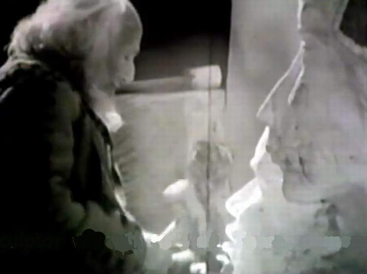
С тех пор прошло много лет. Талант Исаака Иткинда снискал ему любовь многих людей, среди которых были Луначарский, Горький, Маяковский, Есенин, физиолог Павлов. С работами Иткинда по репродукциям был знаком Пикассо. В 60 музеях Советского Союза, в 30 частных коллекциях есть произведения этого выдающегося ваятеля. Имеются они и в других странах мира – в США, Канаде, Индии, Франции. Кажется, судьба действительно улыбнулась этому человеку.
Рассказывают, что как-то в Алма-Ате к скульптору громко постучали. Он открыл дверь. На пороге стоял высокий худощавый человек с длинными седыми волосами. Он стоял, не двигаясь и не сводя с Иткинда пристального взгляда. Это был очень старый человек с одутловатым лицом. Одна рука его была заложена за борт легкого серебристого плаща, другая покоилась на золоченой гриве льва – набалдашнике старинной трости.
Поскольку гость молчал, скульптор, ничего не говоря, сделал широкий приглашающий жест. Они прошли в комнату. Незнакомец придирчиво осмотрел маленькую, бедно обставленную комнату, степенно уселся.
– Скажите, вы Иткинд из Сморгони? – строго спросил пришелец.
– Да, я тот самый Иткинд, – с улыбкой ответил скульптор.
– И вы учились семьдесят лет назад в ешиве?
– Да, учился.
– Меня зовут Соломон. Я вижу – вы меня не узнали! А ведь мы когда-то учились вместе... Были друзьями. Я живу в Вильнюсе...
Теперь Иткинд узнал его. Он засмеялся.
– Я очень рад нашей встрече. Ах, молодость! Как далеко она отлетела. Как время бежит и куда оно так торопится, Б-же мой...
– Б-га ты давно забыл, Иткинд, – отрезал бывший товарищ. – Я пришел, чтобы напомнить тебе о Б-ге. – Желтое лицо Соломона внезапно порозовело.
– Хорошо! – воскликнул Иткинд. – Очень хорошо! Ты можешь говорить мне все, что хочешь. Я не обижусь, видит Б-г.
– Не трогай Б-га, – сказал гость, – ты ж его бросил. А я, как видишь, верен Ему. Я прожил честную жизнь. А ты, Исаак? Как ты жил, с чем остался?
Два старых человека пристально смотрели друг на друга. Пытливое беспокойство светилось во взгляде раввина, а художник, глядя на него, ничуть не смутился. Он был безмятежен.
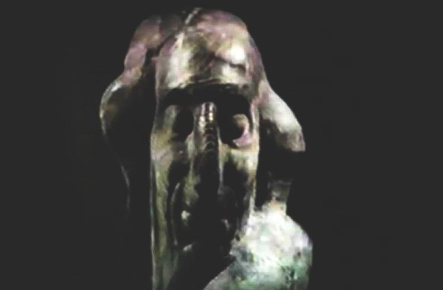
Иткинд смежил веки и что-то замурлыкал себе под нос. Потом он открыл глаза и снова поглядел на посланца из своей юности. Тот сидел все так же неподвижно и прямо, сцепив на животе сухие тонкие пальцы. И взгляд у него был тот же – суровый, сосредоточенный, вопрошающий. «Ах, какая прекрасная модель, готовая скульптура! – подумал Иткинд и, еще раз глянув на необычного гостя, понял, что он приехал не просто так. – Совсем не для того проделал этот хитрец столь трудный и дальний путь, чтобы напомнить мне о Б-ге или узнать подробности моей жизни. Какое-то очень важное дело привело его ко мне. Что ж, подождем...»
– А знаешь, Соломон, ты очень хорошо выглядишь, – сказал Иткинд искренно, с дружелюбной нежностью. – Ты мне очень помог тем, что пришел ко мне.
– Я? Каким образом? – живо спросил раввин.
– Сейчас я скажу каким. Всю мою жизнь люди помогали мне. Помог Антокольский. Увидел я книгу о нем и стал скульптором. Помог Рущиц, потом Горький. Я попал к Волнухину. Он тоже помог. Со мной многие возились. И Коненков, и Луначарский. Когда я болел, меня регулярно навещала Голубкина. Меня постигали неудачи – и мне охотно помогали. Я ничего не просил, не требовал. Никому не жаловался. Я жил и работал. Мне нужно было довести до конца начатое. Я стоял на своих ногах. Глина, мрамор, дерево – вот и все, что мне было нужно... И мне помогали. – Иткинд засмеялся: – Вот и ты мне помог, Соломон. Ты нашел меня, ты ко мне приехал. И мы с тобой снова вернулись в нашу юность.
– О чем ты говоришь, Иткинд? Чем я тебе помог? Мы прожили такую долгую и такую трудную жизнь! Чему ты смеешься?
– Я смеюсь от счастья. А ты помог мне острее его почувствовать.
Гость растерянно улыбнулся, подошел к скульптору и неловко чмокнул его в щеку. Потом снова уселся и заговорил мягким, проникновенным голосом:
– Мне стыдно перед тобой, Иткинд. Я ничего для тебя не сделал. Ничем не помог, прости меня за это... Я тебя осуждал. Я человек маленький, а ты – ты большой человек. Я приехал к тебе за помощью. Меня послала наша община. Нам нужен твой резец скульптора. Нам нужны твое сердце, руки и голова, Иткинд...
– Говори, – тихо сказал Иткинд. А сам печально подумал о том, как некстати ему стали отказывать ноги. Руки-то у него еще работают безотказно. Руки – молодцы. Но несчастная астма держит его в ловушке. Не будь ее – он работал бы, как всегда, каждый день. С утра до вечера... – Что от меня нужно? – спросил Иткинд.
– Недалеко от Вильнюса есть место, где фашисты во время войны расстреляли шесть тысяч человек. Там были дети и взрослые, гражданские и военнопленные, люди разных национальностей. Среди них было много еврейских семей. Мы обратились к правительству Литвы с просьбой поставить памятник. Деньги у нас есть. Нам дали разрешение тут же.
Мы хотим, чтобы этот памятник сделал ты!
– Я сделаю! – немедля ответил Иткинд. – А что бы вы хотели? – быстро спросил он.
– Ты художник – тебе и решать! Твой труд будет хорошо оплачен.
Иткинд досадливо махнул рукой:
– Деньги мне совершенно не нужны. Но помощники необходимы. Ты можешь мне прислать трех молодых крепких парней?
– Через неделю они будут у тебя! Мой друг – Юозас Микенас, он преподает скульптуру в художественном институте. Он даст мне трех своих студентов. Для них это будет практика...
– Ну вот и договорились! Я сделаю быстро этот памятник, вот посмотришь. И люди будут довольны моей работой.
Сердце у Иткинда сладостно замирало, выпуклый лоб напрягся. Он уже что-то прикидывал в голове, шевелил пальцами, начисто забыв о госте и обо всем на свете.
Вид у него был радостный и просветленный. Осознанная цель неизменно вызывала в нем бурный приток сил. Откуда они брались, он и сам не знал.
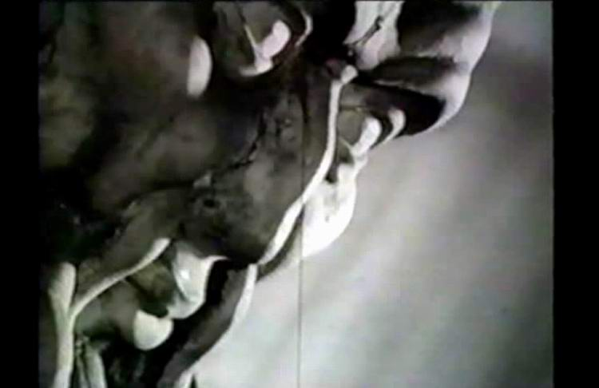
Представление о странной и почти мифической фигуре, какой рисовали Иткинда слухи и легенды, быстро изменилось у меня, когда я прочитал о нем почти все, что было написано за девять десятилетий его жизни. Ясно и отчетливо вырисовывался из всего этого облик выдающегося мастера пластики. Мне попадались утверждения о том, что Иткинд прожил свою жизнь как бедный страдалец и напрасно обрек себя на это поприще, что в целом судьба его сложилась драматично и что он прошел сложный и противоречивый жизненный путь. И все это можно было подтвердить многими фактами биографии художника. Ну, взять хотя бы одно свидетельство журналиста двадцатых годов, который на задворках одной из провинциальных богаделен нашел странного человека. Странность его заключалась в том, что он был тих, добр и оборван. На крепком теле этого человека были только женская рубашка, солдатские штаны и... галстук.
О голодающем скульпторе из России напечатала статью и лондонская «Таймс». Вскоре в «Вечерней Москве» появилась статья Анатолия Васильевича Луначарского «Почему голодает скульптор Иткинд?». Сегодня нельзя без улыбки читать несколько раздраженный ответ добрейшего Луначарского на все заметки о тяжелом материальном положении Иткинда. По всему видно, что его «допекли».
О чем же писал тогда Луначарский? «Вообще говоря, государство отнюдь не имеет на себе обязательства поддерживать взрослых талантливых людей, которые, как и всякие другие граждане, должны сами находить себе то или другое подспорье, тот или другой заработок». Далее нарком сообщал, что Иткинду была переведена сумма в 300 рублей как единовременная помощь, и заканчивал свою статью призывом: «Не надо постоянно виснуть на государстве, которое у нас далеко не богато и которое не может взять на себя какую-то особую роль единственного покровителя искусств и единственного покупателя художественных произведений» («Вечерняя Москва», 28.02.1928).
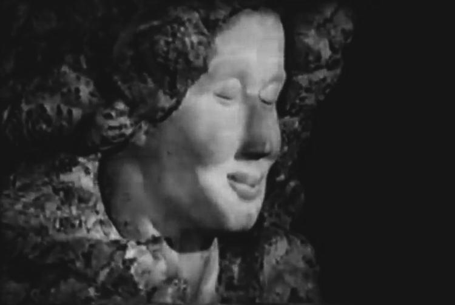
Множество всевозможных мучений перенес этот человек в своей жизни, длившейся целый век. Но высота его духа не снижалась, творческая мощь не ослабевала в житейских бурях и водоворотах.
Иткинда часто описывали как комика и чудака, рассеянного до последней степени: дорогу из мастерской к себе домой он самостоятельно найти не мог и нанимал мальчика, который доставлял его по адресу. Костюм его был вечно перепачкан в глине, но чистился он щеткой только спереди, и, когда ему говорили, что нужно бы почистить и сзади, он отмахивался и отвечал, что там неважно. Как-то сын скульптора И. И. Иткинд показал ему изящный китайский перочинный ножичек. Скульптор долго любовался им, не выпуская из рук. Потом сын попросил его опустить в почтовый ящик письмо. Отец ушел и долго не возвращался. Вернулся он чем-то расстроенный. В руках у него было письмо.
– Папа, почему же ты не опустил мое письмо? – удивленно спросил сын.
– Ты знаешь, мальчик, вместо письма я опустил в ящик твой ножичек. Так жаль... Ведь его тебе подарила сама Анна Семеновна Голубкина!
Исаак Яковлевич говорить любил, любил заводить знакомства, любил разговаривать с малознакомыми людьми, гулять с ними, обедать с ними, рассказывать о себе, но вот об искусстве он никогда ни с кем не говорил. И, вероятно, оказался бы в самом серьезном затруднении, если бы его спросили, что ж такое, по его мнению, искусство; лекцию же Иткинда о его творческом методе я вообще представить себе не могу. Он был мастером, то есть просто работал – и все. И работал споро, самоотверженно, и всегда весело...» Эти слова об Иткинде написал Юрий Осипович Домбровский в своей книге «Факел». Здесь все сказано предельно ясно и очень верно. И опасения Домбровского вполне оправданны: писать о художнике нужно так, чтобы слова не стесняли свободу его творческого духа ни в чем. Однажды у Иткинда все-таки спросили, а что же такое, по его мнению, искусство? Он усмехнулся, ответ на этот вопрос не вызывал у него никаких затруднений:
– Искусство – это что-то большое, как Тихий океан... А скульптура – остров в этом океане. Я сижу на этом острове и совсем не чувствую себя Робинзоном...
В газете «Северо-западный голос» 1 января 1915 года была помещена заметка, сообщавшая о первой выставке скульптора-самоучки. Там, в Вильно, экспонировались работы Иткинда – «Мученик инквизиции», «Горькая улыбка», «Отче наш», «Сумасшедший», «У святого ковчега», «Веселый еврей». В этих работах был явно ощутим элемент архаичности. Это было искусство молитвенного облика, патетического и многоречивого. «О степени таланта г. Иткинда уже высказывались лица, компетентные в искусстве. Прибавим к сказанному, что у г. Иткинда есть своя глубокая почва, и потому ему не угрожает опасность увлечься подражательностью». Так заканчивалась первая рецензия на первую выставку скульптора.
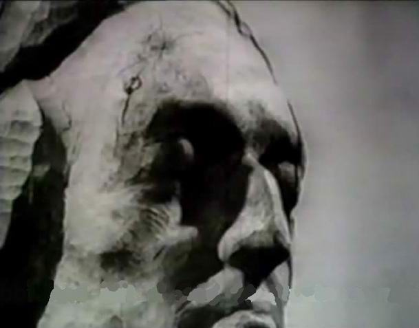
Скульптор-самоучка быстро идет вперед, он никому не подражает, не заимствует чужую манеру. Модные течения, салонность нисколько не тронули его. Обладая мощным зарядом идей, образов, Иткинд с головой окунулся в работу. Его интересуют состояния человека – боль, страдание, гнев, радость, грусть. Он опирается на свою фантазию, воспоминания, чувства. Иткинд не думает о вековечности своих творений, не ждет славы, похвал. К этому он всегда относился с юмором.
– Я дружил с Максимом Горьким, ему очень нравились мои работы. Горький добивался для меня «вида на жительство», но градоначальник ему отказал.
– Этот Иткинд может прославить Россию своими работами, – твердил ему Горький.
– Ну-с, это вы хватили через край, – ответил ему градоначальник.
В жизни Иткинд был человеком неприхотливым, смиренным и удивительно добрым. Но в искусстве он был неукротим. Это видно в любой его работе – от самой первой до самой последней.
Он никогда не жаловался, не роптал, не сетовал на свою судьбу. Естественная способность, призвание вели его по жизни. Самые высокие минуты восторга и счастья испытывал он тогда, когда в его руках были молоток и стамеска, а перед ним был обрубок дерева, из которого нужно было убрать все лишнее, чтобы вызволить образ. И образ этот, схваченный мастером с первого же взгляда, естественно воплощался в материале.
Об Иткинде не раз писали, что краткое, исчерпывающее определение этого художника, этой необыкновенной личности заключено в словах: Иткинд – инструмент искусства, потому что всю жизнь он, как машина, делал одну работу за другой, не оглядываясь назад. Я думаю, что это определение ошибочно в главном – никогда Иткинд не был инструментом искусства, не был его рабом и покорным служителем. У него была слишком свободная душа. Сдержать ее было нельзя. Он был мастером искусства – живым, горячим, благородным. Работал по вдохновению. Ради выгоды Иткинд работать не мог. Он был рыцарем искусства, и любовь к своему делу у Иткинда была безраздельной, самоотверженной.
Иткинд всю свою долгую жизнь смотрел на мир восторженными глазами поэта. Когда он только начал лепить, его объявили сумасшедшим. Это была беззлобная уличная молва, людской суд. Узнал Иткинд суды куда пострашнее, страдания терпел этот человек такие, что другой бы не выдержал. Он умирал и снова возрождался. Он жил силой духа.
Октябрьскую революцию Исаак Яковлевич Иткинд встретил зрелым сложившимся художником. Прежде он создавал типы обездоленных, нищих, скорбящих. Его резец воплощал образы еврейского гетто. Теперь он работает над образами Маркса, Ленина, Лассаля. Создает композицию «Погибающий матрос», статую «Рабочий-литейщик».
Член «Союза русских художников», экспонент многих выставок, Иткинд принимает активнейшее участие в осуществлении плана монументальной пропаганды. Его работы признаны, покупаются.
В 1917 году Иткинду было 46 лет. Замечу в скобках, что с датами у него всегда была путаница. Он сам определил дату своего рождения – 19 апреля 1871 года. А в 1966 году сказал: паспорту не верьте, мне через два года исполнится сто лет. И все же в литературе об Иткинде принято писать, что он родился в 1871-м. Я думаю, что это существенно его биографии не меняет. Тремя годами больше – тремя меньше... Важно, что за свою жизнь, по кропотливому подсчету Л. Г. Плахотной, скульптор И. Иткинд создал 150 работ, из них уцелело около пятидесяти. Многие его произведения стали достоянием Казахской картинной галереи, ныне Государственного музея искусств Казахстана.
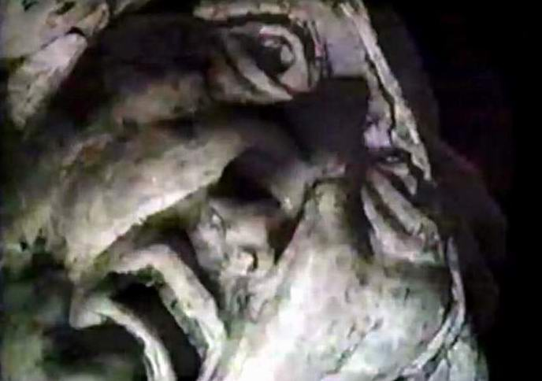
Исаак Яковлевич Иткинд – это талант громадный, человек изумительной душевной организации. Но он был еще и мастеровым, не ждал вдохновенья. Щедро дарил скульптуры, раздавал их людям. Налево и направо. Его доброта была равна таланту. А талант Иткинда – сложный, прихотливый, своеобразный.
Было бы ошибкой утверждать, что Иткинда-человека не принимали всерьез, смотрели на него как на взрослого ребенка, как на смешного одержимого чудака. Бывало и такое, но кто были его друзья? Луначарский, Мейерхольд, Книппер-Чехова, Качалов, Горький, Либединский, Есенин, Коненков, Голубкина, Павлов, Михоэлс. Все они так или иначе помогали Иткинду, устраивали его выставки, писали о нем, заботились, с удовольствием встречались с ним. Иткинда трогала участливость этих людей к его судьбе. Он платил им самоотверженной любовью.
Коненков написал, что Иткинд – один из самых лучших скульпторов, которых он знает. А уж Сергей-то Тимофеевич знал, пожалуй, в этой области все! И мне Коненков не раз говорил об Иткинде, вспоминая отдельные работы и его самого. Говорил, что Иткинд всегда чудил, но создавал такие изумительные работы, равных которым нет в современной мировой скульптуре. Почти то же самое о Коненкове говорил Исаак Яковлевич. Они оба хорошо знали цену друг другу, хотя жили далеко один от другого и с 20-х годов ни разу не встречались. Иткинд всегда преклонялся перед истинными творцами.
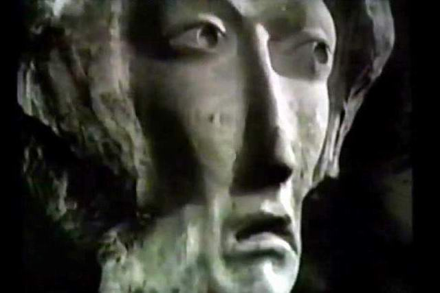
Был при мне такой случай. Я с друзьями сидел у Иткинда. Он рассказывал свои захватывающие бесконечные истории, которые мы слушали с жадным любопытством. Естественно, по работам можно составить себе представление о художнике. И все же непередаваемо обаяние живого человека, который вот сейчас сидит перед тобой: взгляд и наружность мудреца, мягкий юмор – все это неповторимо. Это Иткинд. Загадочный человек, который, рассказывая нам эпизоды своей жизни, уже сумел нас заставить взглянуть на мир его глазами.
Масштабность и жизнеутверждающая сила всего творчества Исаака Иткинда, свежесть и новизна его произведений рождены, на мой взгляд, не практическими рецептами и не художественными канонами, а чувством братской любви к людям. У Иткинда была молодая и свободная душа, исключительное доброжелательство. Никто и никогда не слышал от него злого слова в адрес другого человека. Но если на его пути встречался кто-то злой, мелкий, ничтожный, он считал своим долгом предупредить: бойтесь такого-то – нехороший человек, способен на подлость...
Иногда, узнав о какой-то жестокости, мерзости, предательстве, Иткинд качал головой и тихо говорил:
– Это стыдно, это очень стыдно.
И бывал сильно огорчен. Он испытывал горе, слыша о несчастьях других людей.
Исаак Яковлевич часто шутил на свой счет:
– Интересно, куда я попаду – в рай или в ад? Вот в Алма-Ате много карагача, а в раю, я думаю, его еще больше. Там много обнаженной натуры. Я буду делать райские скульптуры из райского дерева.
В очерке Юрия Осиповича Домбровского «Ваятель масок Иткинд» есть история о том, как Иткинд попал в рай. Это длинная история с диалогами, приключениями, недоразумениями, переодеваниями и массой неожиданных и смешных подробностей. Дело в том, что в рай он попал незаконно, «фуксом». Его тут же выловили небесные стражи, притащили в небесное управление и стали допрашивать. Ну, он им представлялся дурачком, заговаривая зубы, вертелся, врал, говорил, что имел очень важный пропуск, но потерял его по дороге. Короче, он быстро сбил с толку чертей, и они махнули рукой. Но тут подоспели ангелы. Они отпихнули простодушных чертей и принялись за Иткинда как следует. Для порядка дали по зубам, а потом повели к следователю по потусторонним делам. И тот, не обращая внимания на почтенный возраст клиента, мотал его по всем правилам своей страшной науки, быстро расколол Иткинда – и его тут же потащили в ад. В отличие от чертей непорочные ангелы знали свое дело хорошо – и бедный Иткинд тешил себя одной только надеждой, что и в аду порядки давно изменились и жарить его уже не будут, а подыщут что-нибудь полегче...
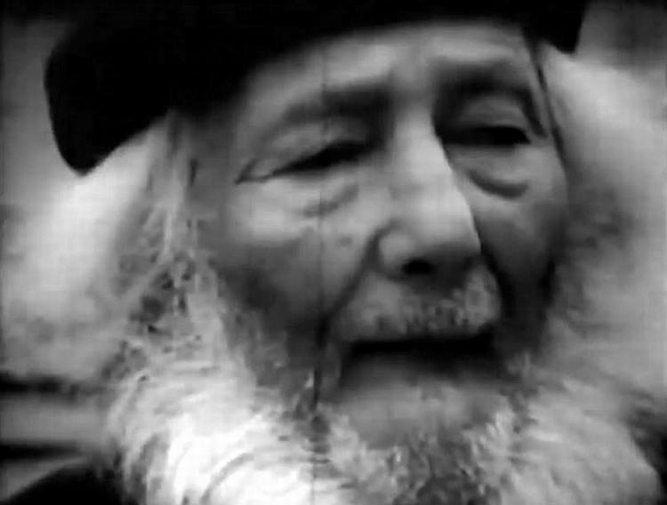
Тема «Иткинд на том свете» была запечатлена скульптором в двух его работах – «Иткинд в раю» и «Иткинд в аду». Один из промежуточных вариантов решения этой темы есть у меня. Работу Иткинда мне подарила Клара Домбровская. Это портрет Иткинда с его крутым, высоким и круглым лбом и мощными волосами. Печать полнейшей отрешенности лежит на этом удивительно мягком и нежном лице.
Я уверен, что активная человеческая позиция и кипучая жизненность Иткинда – главный источник легенд о нем. Отсечь их от правды – значит насильственно обеднить его образ. Стоит ли делать это?
Но есть и другой Иткинд – большой художник, тонкий знаток великого множества оттенков психологии человека, гуманист и философ, мастер, безупречно владеющий отточенной пластической формой. Это мастер цельный, современный. Его творчество правдиво, поэтично, многообразно. В нем нет места натянутости, робости и академической мертвенности позирующих натурщиков. Нигде у Иткинда вы не найдете повторяемости приемов, протокольности мысли, вялой формы, равнодушия, нарочитости, театрализации. Его скульптуры пришли в этот мир, чтобы жить, действовать, бороться.
Я ощущаю в самых разных скульптурах Иткинда биение сердца поэта; он не забывает о портретном сходстве, но не к нему стремится. Он не хочет быть простым иллюстратором биографии человека. Передать в портрете человека, время, эпоху, высокое нравственное благородство – задачи почетные для любого художника. Но Иткинд в целом ряде своих портретов обладает еще и каким-то удивительным пророческим ясновиденьем: для него человек – «контрапункт» истории, сгусток ее мудрости, воли, энергии, неостановимого движения.
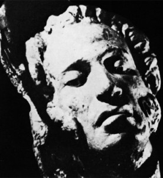
В 1937 году к столетней годовщине гибели Пушкина в Ленинграде была открыта выставка. Она разместилась в Эрмитаже и вобрала все лучшее, что было создано к этому времени о поэте в живописи, графике и скульптуре. Большие выставки, посвященные 100-летию со дня смерти А. С. Пушкина, прошли в Москве, Тбилиси, Ереване, Киеве, Казани, во многих других городах страны. Все эти выставки включали такие разделы: детство и юность Пушкина, ссылка Пушкина в Михайловское, Пушкин под надзором, гибель Пушкина.
На Пушкинских выставках экспонировались и работы Иткинда. Поэзия Пушкина давно покорила сердце художника. Было в этих стихах что-то неодолимое, чистое, согревающее. Иткинд воспринимал пушкинскую поэзию как голос участливый и дружественный.
Когда скульптор говорил о Пушкине, он преображался.
– Пушкин был как солнце... Он любил солнце, любил жизнь. Я тоже люблю жизнь.
О своей работе над образом Пушкина Иткинд рассказывал всегда очень охотно:
– В 1937 году повсюду чествовали Пушкина. Объявили конкурс. Три месяца я не выходил из мастерской. Ко мне приходили люди – я не разговаривал, закрывал дверь. А я люблю поговорить, люблю людей... Я всегда читал Пушкина – «Цыганы», «Бахчисарайский фонтан». Так вот, я вылепил тогда, может быть, пятьдесят или сто портретов Пушкина. Все были разные. Но и Пушкин тоже был разный – он же человек. Приходили люди, кому какой нравился – я дарил. А другие пропали... В музеях сохранилось семь или восемь моих работ. Две были в Эрмитаже – одна, молодой Пушкин, когда он только из лицея, а другая – постарше, уже после женитьбы. В Пушкинском доме на Мойке – «Умирающий Пушкин»... Все говорили, что это самая лучшая работа.
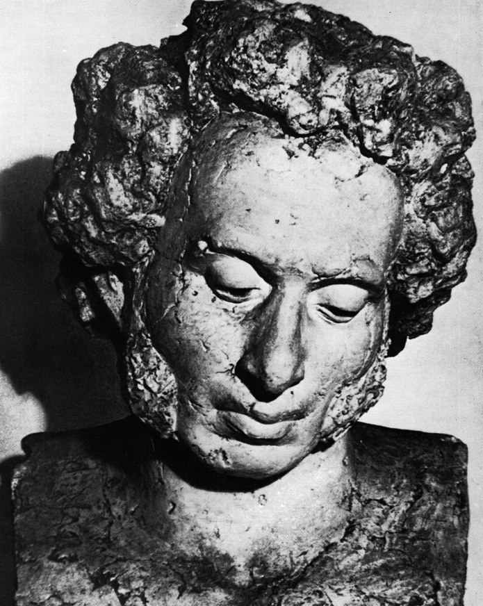
Иткинд обращается к последнему периоду жизни Пушкина. Он создает работы, полные личной скорби. Его Пушкин – это не только избранник судьбы, поэт, отмеченный высшей благосклонностью музы, один из гениев, принадлежащих всему человечеству. Это человек, близкий по духу. Носитель высшей идеи свободы. Огонь, который будет светить людям вечно.
«Умирающий Пушкин» Иткинда – это и жертва тирании, и обаятельный символ благородства души, олицетворение неиссякаемого вдохновения. Щемяще печален конец жизни Александра Сергеевича Пушкина, мужественно сносившего свою участь. Иткинд знал, что до самого дна испил поэт чашу мучений, но остались в мире пушкинская вера, пушкинская надежда, пушкинская любовь – такой смысл вложил Исаак Иткинд в цикл работ, посвященных великому поэту.
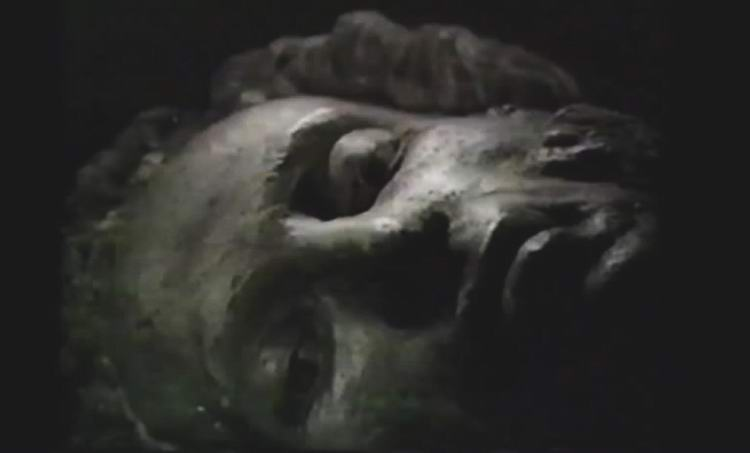
В этом цикле Иткинд достиг подлинной монументальности пластического языка. Он лепил Пушкина из воска, глины, работал в гипсе, дереве. Сила погружения художника в образ умирающего Пушкина была так велика, что он тяжело заболел. Работы были выставлены и признаны лучшими. Иткинд добился и высокого трагизма, и широты художественного обобщения. Его Пушкин – живой реальный человек. И это крылатый, возвышенный образ. Такими же будут в дальнейшем и многие другие изваяния мастера – «Паганини», «Шекспир», «Философ», «Страх», «Сикейрос».
Кроме портрета Шекспира, все перечисленные работы сохранились. Интересно сравнить две трактовки образа Паганини – Коненковым и Иткиндом. Оба скульптора вкладывают в этот образ свои самые сокровенные мысли о творчестве, о назначении художника. Для обоих мастеров Паганини – гений. А гений – это всегда страсть, неуемность, перехлест.
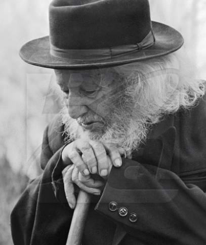
Иткинд сделал своего Шекспира. Этот портрет пропал бесследно. По описанию Домбровского, у Иткинда Шекспир был непривычный – с широким мощным лицом, крупным круглым лбом и улыбкой, обращенной не к людям, а к пространству, не к жизни, а к небытию. Глаза у него были большие, широко открытые.
Этот портрет заказчики даже не решились выставить в театре – так он был непривычен, необычен, дерзок.
Исаак Яковлевич Иткинд прожил большую, нелегкую жизнь.
...Никогда я не видел человека более счастливого, чем Исаак Яковлевич Иткинд.
– Я прожил чистую, вы слышите, очень чистую жизнь, – говорил он.